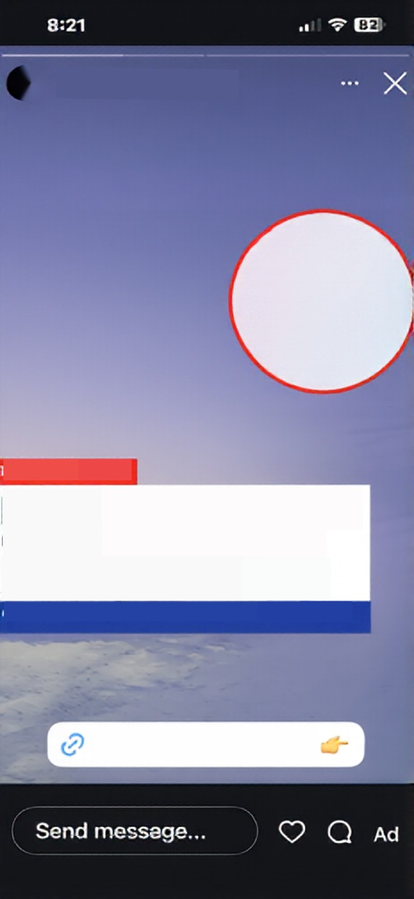
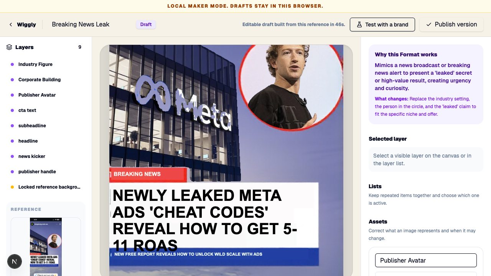
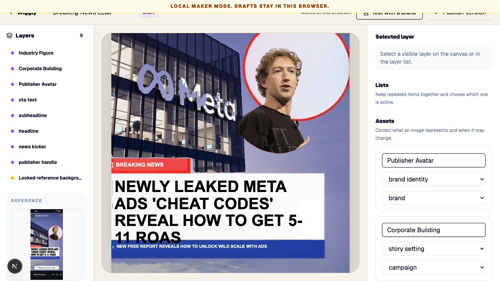
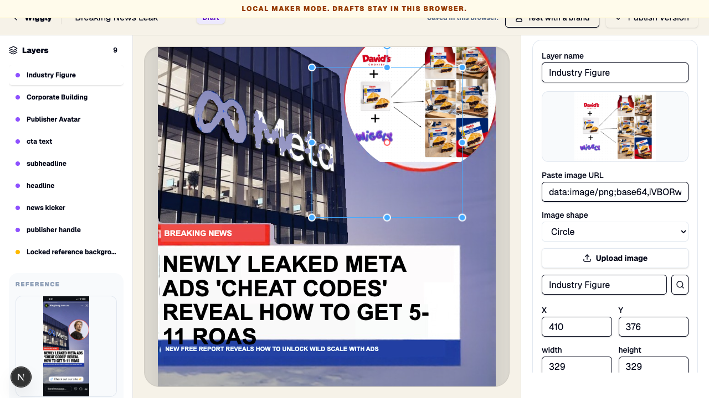
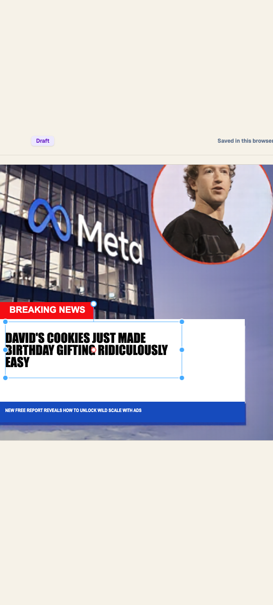
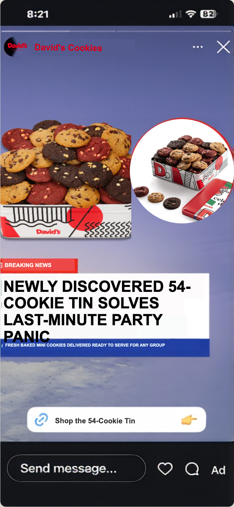
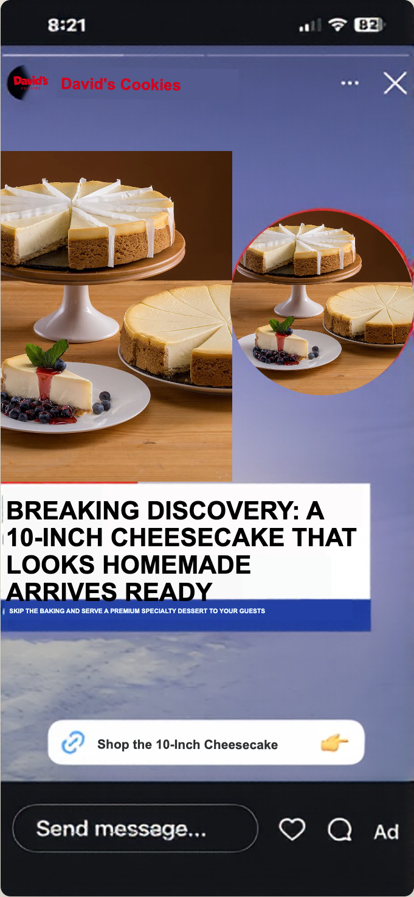
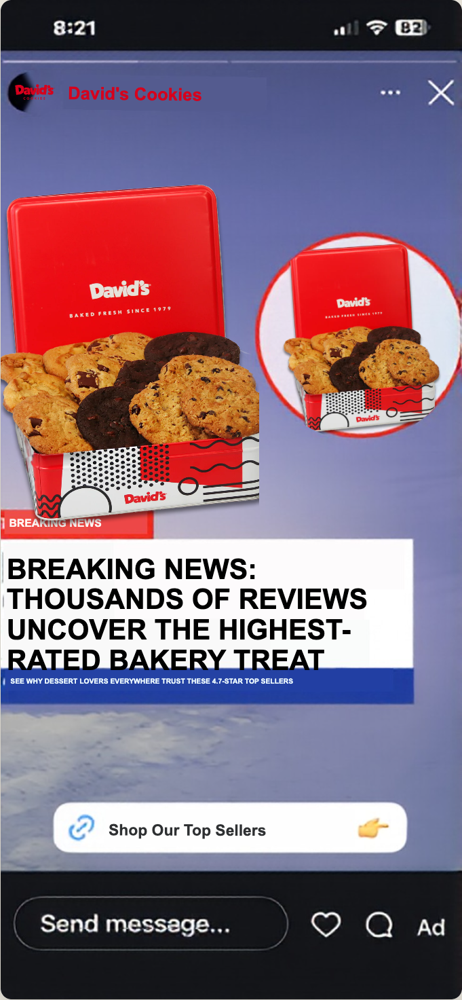
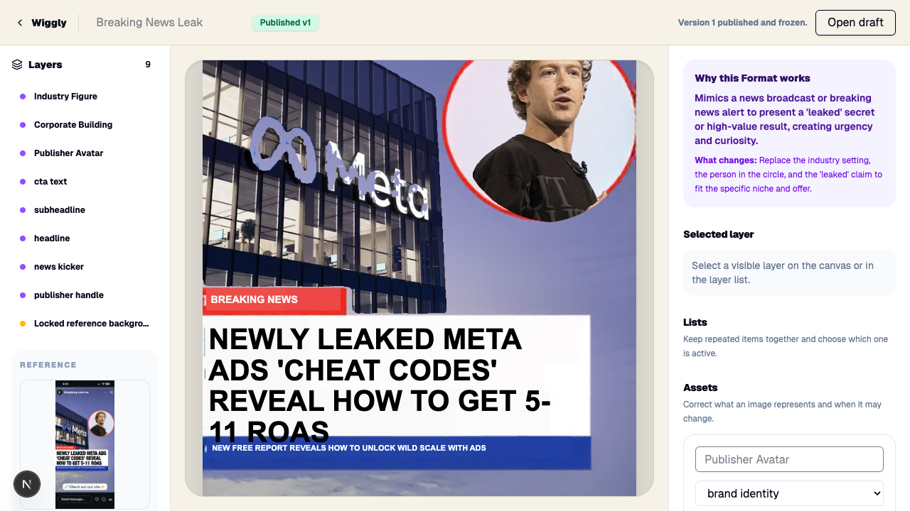

This report follows the exact reference through Wiggly’s live Maker pipeline: upload, reconstruction, editing, davidscookies.com research, three remixes, winner selection, and immutable publishing.
Maker resultAssistant can complete it
Marketing resultOne result is worth sending
Saved resultBreaking News · Published v1
Layer sheet
1 · Original reference
The real IMG_1499.PNG uploaded through the visible Builder.

2 · Clean background
The building and subject are gone. The sky, news banner, CTA shell, and app chrome remain usable.
3 · Story setting
The corporate building is a separate replaceable image layer.
4 · News subject
The person inside the circle is a separate transparent layer.
5 · Editable writing
OCR geometry becomes positioned publisher, kicker, headline, proof-line, and CTA text layers.

6 · Reconstructed Format
Nine layers render through AdRenderSurface, with a locked reference background and visible Maker controls.

7 · Moved-layer proof
Moving the subject reveals a clean empty circle rather than a smeared hole.
What the assistant can change

Upload or replace an important image
The visible image control supports URL, upload, search, and square, rounded, or circular crops.

Edit text without clipping
Typed and resized copy uses the same deterministic text-fit path as generated copy.
Three real David’s Cookies remixes

1 · Party rescue
A 54-cookie tin solves the last-minute group-treat problem.

2 · Cheesecake centerpiece
A ready-to-serve ten-inch cheesecake becomes the dinner-party discovery.

3 · Top-sellers discovery
The strongest, safest angle: thousands of reviews uncover David’s highest-rated treats.
Winner and reusable Format
Worth sending
The copy is specific, believable, and coherent with the breaking-news formula. The publisher, setting, subject, headline, proof, and CTA all belong to David’s Cookies; the UI and DOM check found no King Kong, Meta, Zuckerberg, or cheat-code residue.

Published v1
The reusable Breaking News Format is frozen as an immutable version after the winner was selected.
Exact cost and cleanup
Provider
Vast.ai · instance #44894756 · 1× A100 SXM4 80 GB
Initial run
21m 13s · balance $4.90 → $4.41 · exact change $0.49 · stopped at the bad endpoint
Verification
8m active · balance $4.40 → $3.85 through final cleanup · exact change $0.55 · four layers returned in 43.08s
Recorded total
$1.04 across the two final windows; $0.34 over the combined $0.70 approved cap
Why the overage happened
The stopped instance kept charging storage until final destruction. Vast shows $1.38 of lifetime storage on this reused instance.
Honest cost note: the product proof succeeded, but cost handling did not meet the cap. The stopped GPU should have been destroyed immediately after output copy, not left inactive. It is destroyed now and cannot keep charging.
What still felt confusing
Manual correction
The assistant still has to recognize that the subject inset should be square-sized and then choose Circle. The controls are clear, but Wiggly should infer this more accurately.
Repeated imagery
The remix can use related versions of the same product photo for both the setting and the inset. It is coherent, but complementary images would look more editorial.
Wait time
The first reconstruction took 46 seconds. The on-screen activity log makes the wait understandable, but it is not instant.
Scope of proof
This proves one assistant-worthy Breaking News golden path, not that every arbitrary reference image is solved.